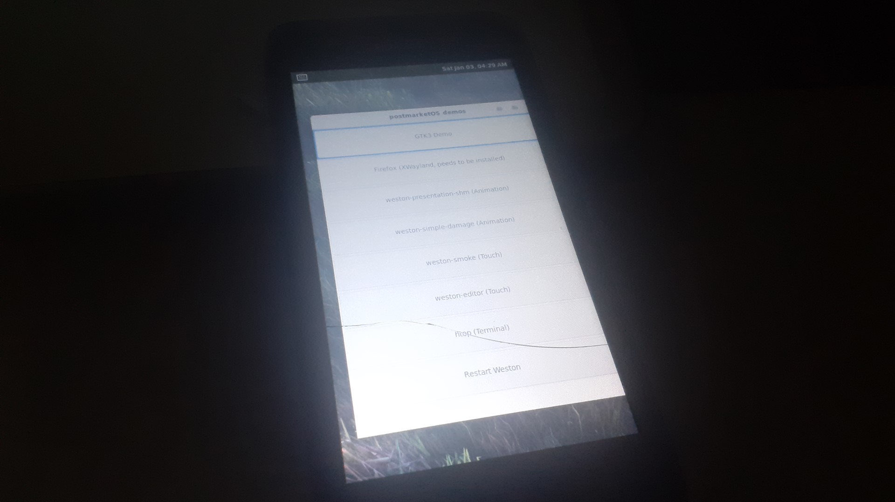

Huawei Y560 (huawei-y560)
|
 Huawei Y560 running Weston | |
| Manufacturer | Huawei |
|---|---|
| Name | Y560-L01 |
| Codename | huawei-y560 |
| Released | 2015 |
| Category | testing |
| Original software | Android 5.1 on Linux 3.10.49 |
| postmarketOS kernel | 3.10.49 |
| Hardware | |
| Chipset | Qualcomm Snapdragon 210 (MSM8909) |
| CPU | Quad-core 1.1 GHz Cortex-A7 |
| GPU | Adreno 304 |
| Display | 480x854 IPS LCD |
| Storage | 8 GB |
| Memory | 1 GB |
| Architecture | armv7 |
{kind=link}
| USB Networking |
Works
|
|---|---|
| Flashing |
Works
|
| Touchscreen |
Works
|
| Display |
Works
|
| WiFi |
Partial
|
| FDE | |
| Mainline |
Broken
|
| Battery | |
| 3D Acceleration | |
| Audio |
Broken
|
| Bluetooth | |
| Camera | |
| GPS |
Broken
|
| Mobile data |
Broken
|
| SMS |
Broken
|
| Calls |
Broken
|
| USB OTG |
Broken
|
| NFC | |
| Accelerometer | |
|---|---|
| Magnetometer | |
| Ambient Light | |
| Proximity | |
| Hall Effect | |
| Barometer | |
| Power Sensor | |
| Camera Flash | |
|---|---|
| Keyboard | |
| Touchpad | |
| USB-A | |
| HDMI/DP | |
| Ir TX | |
| Ir RX | |
| Stylus | |
| Haptics | |
| Ethernet | |
| FOSS bootloader | |
Contributors
- Worldblender
- Sonic011gamer
Users owning this device
- SmP971 (Notes: Broken touchscreen, still working.)
- Sonic011gamer (Notes: absolute legend)
How to enter flash mode
Hold the Volume Down button, and then press the Power button
Unlocking the bootloader
Downgrade the bootloader & system to version B100 to be able to unlock bootloader.
1. Root your phone, you can use kingoroot for easy rooting.
2. Download stock android and recovery from here
3. Install Rashr - Flash Tool from the Play store, or download it from the internet and grant it root access.
4. Unzip the downloaded stock recovery on your internal storage.Unzip the downloaded ROM on an SDcard, or you can use ADB later.
5. Inside Rashr, choose "Recovery from storage" and select the unzipped recovery.
6. Choose "reboot" from the Rashr app.
7. After you reboot into recovery, choose either "Apply update from ADB" or "Apply update from SDcard".
8. When update finishes, restart(if it didn't already do that), enable developer settings, click on the OEM unlock setting and enable adb.
9. In a commandline run:
adb reboot-botloader
10. The phone should reboot to a black screen/OEM image. From inside the commandline run:
fastboot oem-unlock go
Install TWRP (optional, but recommended!)
1. Download TWRP from here
2. Reboot into fastboot mode.
3. Inside a commandline run:
fastboot flash recovery [drag your downloaded recovery image here]
4. It should now work to reboot into TWRP!
Installation
Setup chroot. Select huawei-y560 as device.
pmbootstrap init
Build rootfs
pmbootstrap build device-huawei-y560
Build kernel
pmbootstrap build linux-huawei-y560
Flash rootfs (Note, this will install rootfs to system partition. You can optionally try to install to userdata partition with --partition userdata argument. In that case you should probably erase system partition with "sudo fastboot erase system")
pmbootstrap flasher flash_rootfs
Flash kernel
./pmbootstrap.py flasher flash_kernel
Run kernel (or you can just restart phone manually)
./pmbootstrap.py flasher boot
See also
- pmaports!1763 Initial merge request